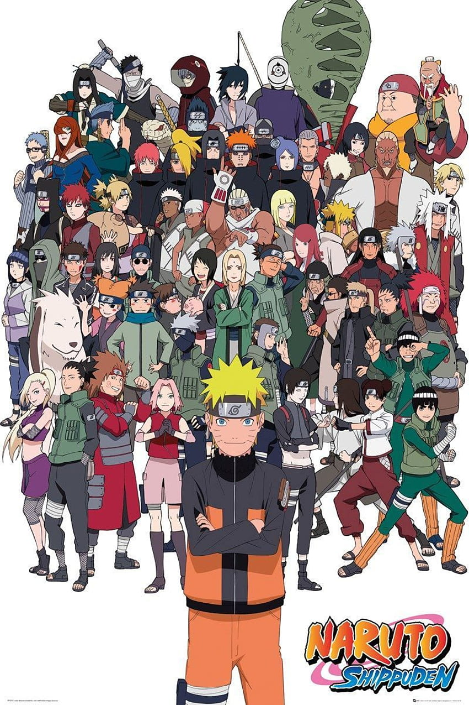

What is Naruto Atlas ?

Naruto Atlas is your ultimate guide to the vast and captivating world of Naruto. Whether you're a long-time fan of the series or just beginning your journey into the ninja-filled universe, our platform is here to provide you with comprehensive information, engaging content, and exciting features.
Explore the rich history and lore of Naruto through our extensive database, which includes detailed profiles of characters, villages, clans, jutsu techniques, and much more. Dive deep into the captivating narratives, intricate relationships, and epic battles that have made Naruto a beloved franchise worldwide.
With Naruto Atlas, you can:
- Discover in-depth character profiles, complete with biographies, abilities, and images.
- Explore detailed information about villages, clans, and other key aspects of the Naruto universe.
- Learn about various jutsu techniques, their origins, and how they are used in combat.
- Stay up-to-date with the latest news, updates, and announcements from the world of Naruto.
Whether you're researching your favorite characters, brushing up on your Naruto knowledge, or simply immersing yourself in the fantastical world of ninjas and shinobi, Naruto Atlas is your ultimate companion. Join us on this epic journey through the ninja world, and let Naruto Atlas be your guide every step of the way. Start exploring now and unleash the power of your inner ninja!